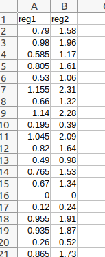

Get_Regressors_From_csv brick¶
Get regressors information (regressors names, values and session) for Level1Design brick using csv files. One csv file should be used by session.
The csv file should contains one column by regressor to add and the first row should contains the name of the regressor:
{kind=link}
Inputs parameters:
- csv_files (a list of existing csv files):
csv files contening the regressors (one column by regressors),” One csv file by session.
ex. ['/home/username/MIA_projects/data/downloaded_data/sess01_regressor.csv', '/home/username/MIA_projects/data/downloaded_data/sess02_regressor.csv']
Outputs parameters:
- sess_regress_level1design (a list of items which are a list of items which are a dictionary with keys which are ‘name’ or ‘val’ and with values which are a string or a list of float):
Additional columns to include in the design matrix (sess_regress parameter of the Level1Design brick)
ex. [ [ { 'name': 'reg1', 'val': [0.79, 0.98, 0.585, 0.805, 0.53, 1.155, 0.66, 1.14, 0.195, 1.045, 0.82, 0.49, 0.765, 0.67, 0.0, 0.12, 0.955, 0.935, 0.26, 0.865] }, { 'name': 'reg2', 'val': [1.58, 1.96, 1.17, 1.61, 1.06, 2.31, 1.32, 2.28, 0.39, 2.09, 1.64, 0.98, 1.53, 1.34, 0.0, 0.24, 1.91, 1.87, 0.52, 1.73] } ], [ { 'name': 'reg1', 'val': [0.99, 0.563, 0.596, 0.752, 0.42, 1.2, 0.79, 1.3, 0.168, 1.12, 0.75, 0.99, 0.77, 0.23, 0.07, 0.63, 0.85, 0.75, 0.63, 0.44] }, { 'name': 'reg2', 'val': [1.56, 1.88, 1.46, 1.32, 1.55, 2.86, 1.23, 2.98, 0.75, 1.2, 1.63, 0.88, 1.96, 1.55, 0.09, 0.32, 1.8, 1.9, 0.45, 1.2] } ] ]